16.4 Computing with local
ISL’s local expression calls for the first rule of calculation that is truly beyond pre-algebra knowledge. The rule is relatively simple but quite unusual. It’s best illustrated with some examples. We start with a second look at this definition:
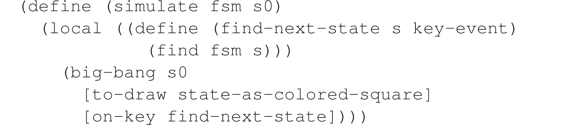
Now suppose we wish to calculate what DrRacket might produce for
(simulate AN-FSM A-STATE)
where AN-FSM and A-STATE are unknown values. Using the usual substitution rule, we proceed as follows:
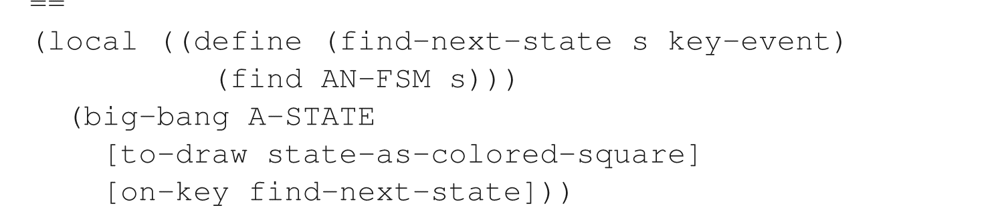
This is the body of simulate with all occurrences of fsm and s replaced by the argument values AN-FSM and A-STATE, respectively.
At this point we are stuck because the expression is a local expression, and we don’t know how to calculate with it. So here we go. To deal with a local expression in a program evaluation, we proceed in two steps:
1. We rename the locally defined constants and functions to use names that aren’t used elsewhere in the program.
2. We lift the definitions in the local expression to the top level and evaluate the body of the local expression next.
Stop! Don’t think. Accept the two steps for now.
Let’s apply these two steps to our running example, one at a time:
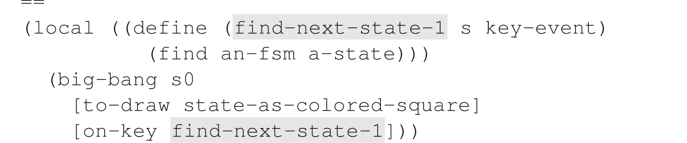
Our choice is to append “-1” to the end of the function name. If this variant of the name already exists, we use “-2” instead, and so on. So here is the result of step 2:
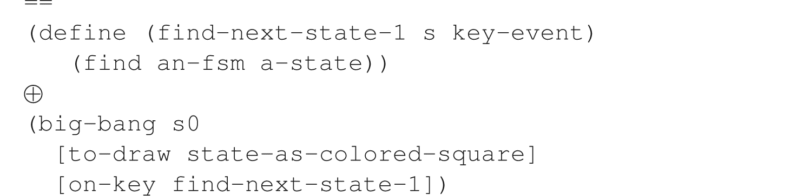
We use ⊕ to indicate that the step produces two pieces.
The result is an ordinary program: some globally defined constants and functions followed by an expression. The normal rules apply, and there is nothing else to say.
At this point, it is time to rationalize the two steps. For the renaming step, we use a variant of the inf function from figure 100. Clearly,
(inf (list 2 1 3)) == 1
The question is whether you can show the calculations that DrRacket performs to determine this result.
The first step is straightforward:
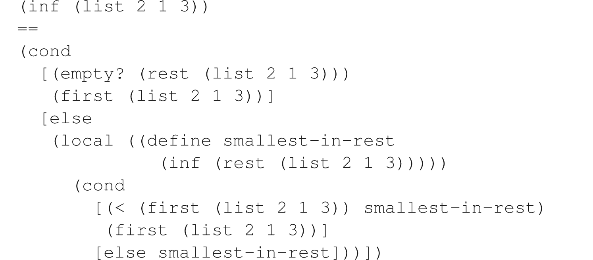
We substitute (list 2 1 3) for l.
Since the list isn’t empty, we skip the steps for evaluating the conditional and focus on the next expression to be evaluated:
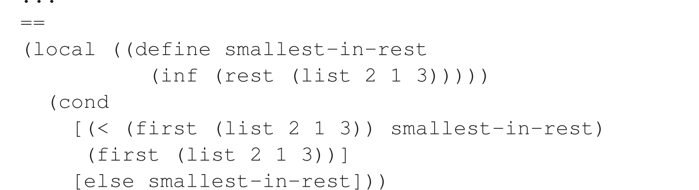
Applying the two steps for the rule of local yields two parts: the local definition lifted to the top and the body of the local expression. Here is how we write this down:
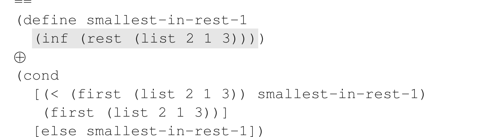
Curiously, the next expression we need to evaluate is the right-hand side of a constant definition in a local expression. But the point of computing is that you can replace expressions with their equivalents wherever you want:
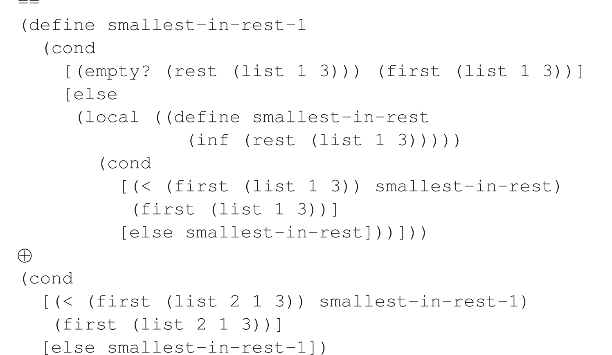
Once again, we skip the conditional steps and focus on the else clause, which is also a local expression. Indeed it is another variant of the local expression in the definition of inf, with a different list value substituted for the parameter:
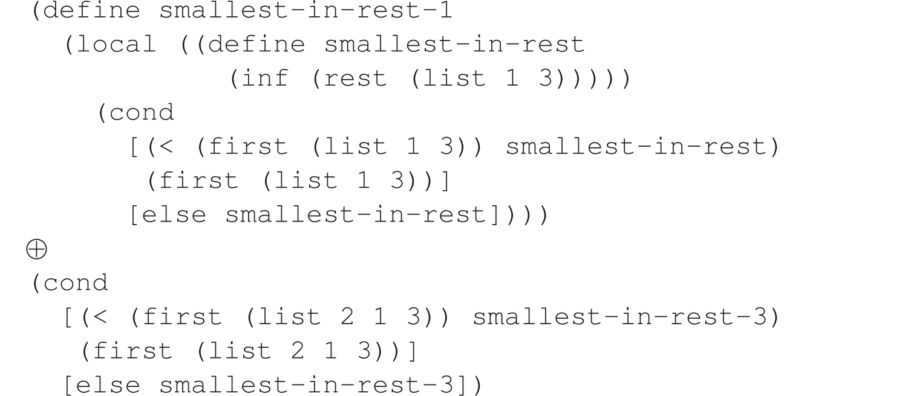
Because it originates from the same local expression in inf, it uses the same name for the constant, smallest-in-rest. If we didn’t rename local definitions before lifting them, we would introduce two conflicting definitions for the same name, and conflicting definitions are catastrophic for mathematical calculations.
Here is how we continue:
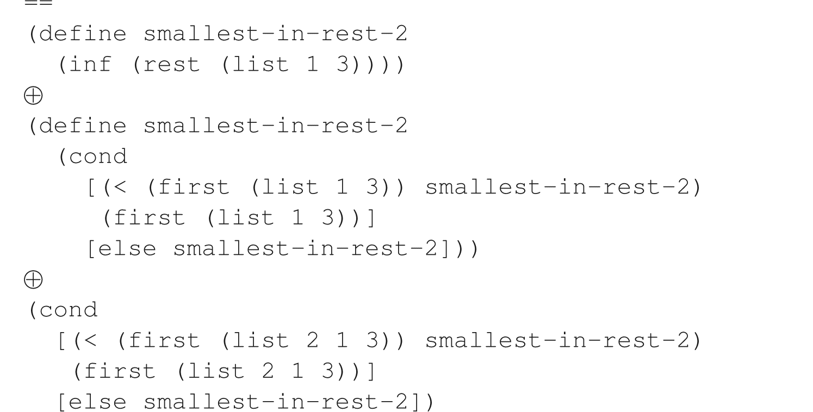
The key is that we now have two definitions generated from one and the same local expression in the function definition. As a matter of fact we get one such definition per item in the given list (minus 1).
Exercise 263. Use DrRacket’s stepper to study the steps of this calculation in detail. 
Exercise 264. Use DrRacket’s stepper to calculate out how it evaluates
(sup (list 2 1 3))
where sup is the function from figure 89 equipped with local.
For the explanation of the lifting step, we use a toy example that gets to the heart of the issue, namely, that functions are now values:
((local ((define (f x) (+ (* 4 (sqr x)) 3))) f)
1)
Deep down we know that this is equivalent to (f 1) where
(define (f x) (+ (* 4 (sqr x)) 3))
but the rules of pre-algebra don’t apply. The key is that functions can be the result of expressions, including local expressions. And the best way to think of this is to move such local definitions to the top and to deal with them like ordinary definitions. Doing so renders the definition visible for every step of the calculation. By now you also understand that the renaming step makes sure that the lifting of definitions does not accidentally conflate names or introduce conflicting definitions.
Here are the first two steps of the calculation:
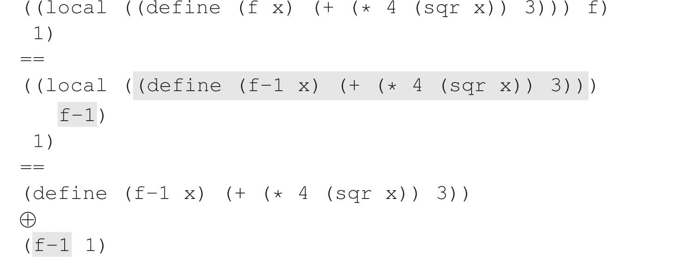
Remember that the second step of the local rule replaces the local expression with its body. In this case, the body is just the name of the function, and its surrounding is an application to 1. The rest is arithmetic:
(f-1 1) == (+ (* 4 (sqr 1)) 3) == 7
Exercise 265. Use DrRacket’s stepper to fill in any gaps above.
Exercise 266. Use DrRacket’s stepper to find out how ISL evaluates
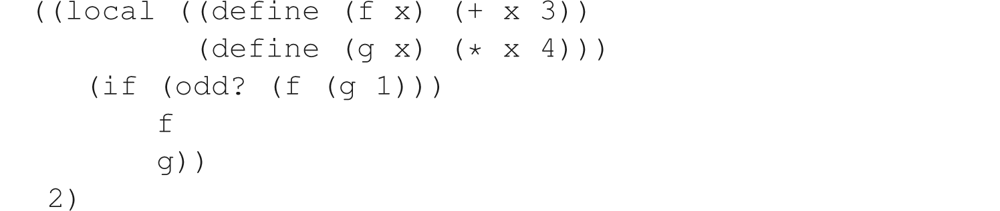
to 5.